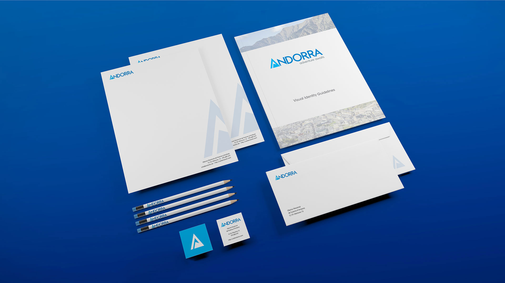

A N D O R R A
Andorra is a country known for its ski resorts. I designed a logotype reflecting the country’s advancement towards modernity as well as the rough terrain that shaped its rich history.
This included visual identity guidelines for the logotype's official colors and other important information.
